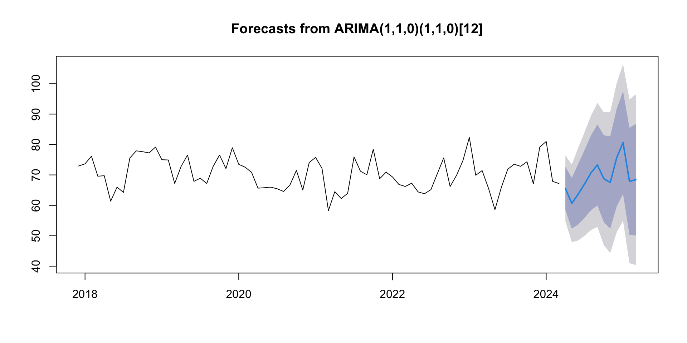
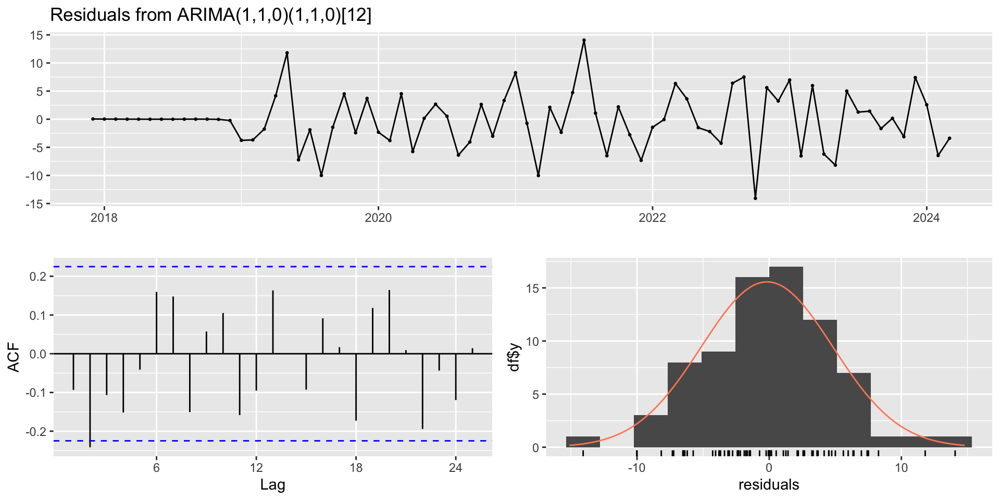
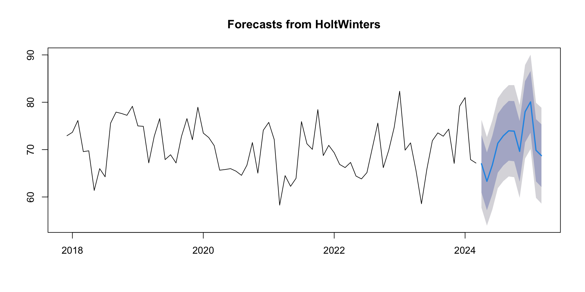
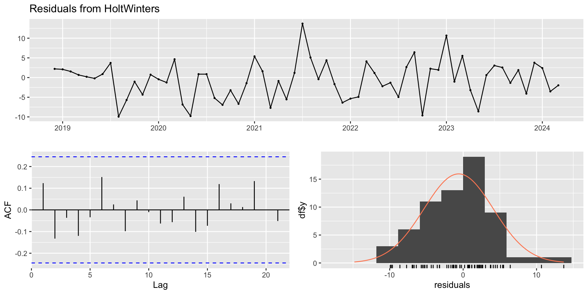
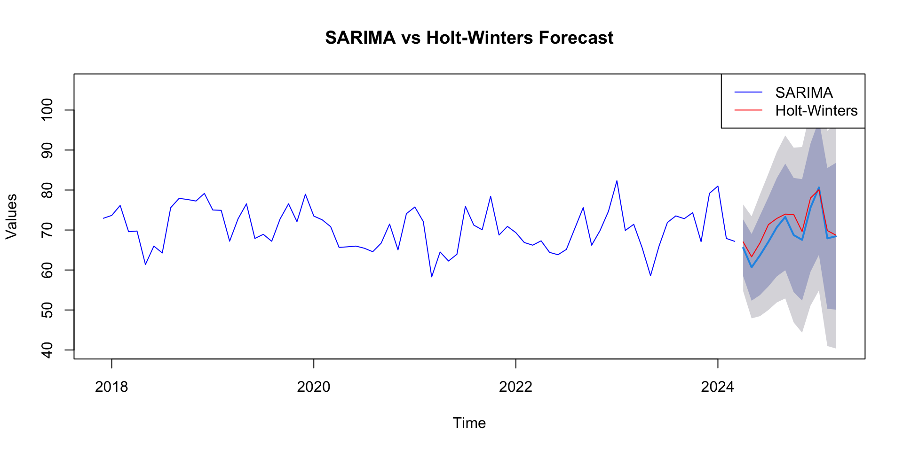

Augmented Dickey-Fuller Test
data: ts_data
Dickey-Fuller = -4.342, Lag order = 4, p-value = 0.01
alternative hypothesis: stationary
The Augmented Dickey-Fuller test results show a value of -4.342, confirming with a p-value of 0.01 that our time series is stationary.
This means we can proceed with reliable modeling without additional data transformations.
SARIMA modelling
SARIMA (Seasonal Auto-Regressive Integrated Moving Average) is an extension of the ARIMA (Autoregressive Integrated Moving Average) model that incorporates seasonality in addition to the non-seasonal components. ARIMA models are widely used for time series analysis and forecasting, while SARIMA models are specifically designed to handle data with seasonal patterns. ARIMA Model is represented as,
Alt text
Mathematical Notation of SARIMA MODEL
ARIMA(1,0,1)(2,1,0)12 model is mathematically expressed as,
Alt text
SARIMA Model fit
sarima_model =Arima(ts_data, order =c(1,1,0), seasonal =c(1,1,0), include.constant =FALSE)summary(sarima_model)
Series: ts_data
ARIMA(1,1,0)(1,1,0)[12]
Coefficients:
ar1 sar1
-0.3779 -0.5532
s.e. 0.1162 0.1054
sigma^2 = 30.57: log likelihood = -198.38
AIC=402.76 AICc=403.16 BIC=409.19
Training set error measures:
ME RMSE MAE MPE MAPE MASE
Training set -0.1633624 4.953662 3.691211 -0.4819798 5.301565 0.8028394
ACF1
Training set -0.09340961
Forecast (SARIMA model)
Point Forecast Lo 80 Hi 80 Lo 95 Hi 95
Apr 2024 65.54062 58.45457 72.62667 54.70344 76.37780
May 2024 60.66826 52.32285 69.01367 47.90506 73.43146
Jun 2024 63.68338 53.73228 73.63449 48.46448 78.90229
Jul 2024 67.05731 55.90363 78.21099 49.99923 84.11539
Aug 2024 70.70272 58.40389 83.00155 51.89329 89.51216
Sep 2024 73.27124 59.94627 86.59622 52.89245 93.65004
Oct 2024 68.74035 54.45537 83.02533 46.89335 90.58735
Nov 2024 67.53416 52.35239 82.71594 44.31564 90.75268
Dec 2024 75.60696 59.57755 91.63638 51.09209 100.12184
Jan 2025 80.63742 63.80333 97.47151 54.89191 106.38294
Feb 2025 67.90714 50.30501 85.50928 40.98700 94.82729
Mar 2025 68.42951 50.09150 86.76751 40.38395 96.47506
Plot (SARIMA model)

SARIMA Model Diagnostics
Ljung-Box test
data: Residuals from ARIMA(1,1,0)(1,1,0)[12]
Q* = 22.09, df = 13, p-value = 0.05399
Model df: 2. Total lags used: 15

HoltWinters
Winters’ exponential smoothing method is an extension to Holt’s method that finally allows for the capturing of a seasonal component. Since Winter’s exponential smoothing is built on top of both single and double exponential smoothing, Winter’s method is thus also known as triple exponential smoothing.
Winter’s method assumes that the time series has a level, trend and seasonal component.
Point Forecast Lo 80 Hi 80 Lo 95 Hi 95
Apr 2024 67.01687 60.95127 73.08247 57.74034 76.29341
May 2024 63.30308 57.19068 69.41548 53.95497 72.65118
Jun 2024 66.77509 60.61517 72.93501 57.35431 76.19587
Jul 2024 71.35164 65.14349 77.55978 61.85710 80.84618
Aug 2024 72.89930 66.64221 79.15638 63.32991 82.46869
Sep 2024 73.97432 67.66759 80.28106 64.32900 83.61964
Oct 2024 73.89755 67.54047 80.25463 64.17523 83.61986
Nov 2024 69.62223 63.21411 76.03035 59.82185 79.42261
Dec 2024 77.99821 71.53836 84.45807 68.11871 87.87771
Jan 2025 80.07788 73.56560 86.59015 70.11821 90.03754
Feb 2025 69.85970 63.29432 76.42508 59.81882 79.90058
Mar 2025 68.72516 62.10600 75.34431 58.60203 78.84828
Plot of HoltWinters forecast

HoltWinters Model diagnostics
Ljung-Box test
data: Residuals from HoltWinters
Q* = 6.883, df = 13, p-value = 0.9081
Model df: 0. Total lags used: 13

Comparision between SARIMA & Holt-Winters Forecast

Cross-validation
SARIMA model
The Mae(SARIMA) is: 5.49672
HoltWinters model
The Mae(Holt-Winters) is: 5.055937
In this comparison, the Holt-Winters model seems to have a slightly lower MAE (5.055937) compared to the SARIMA model (5.49672).
Therefore, based on MAE, the Holt-Winters model might be considered slightly more accurate in this context.
Practical Implementation
- Tourism and Recreation Planning: Collaborate with tourism boards and recreational facilities to enhance visitor experiences and safety. Providing accurate humidity forecasts can help in planning outdoor activities, events, and tourism campaigns, ensuring visitors are prepared for weather conditions and reducing the risk of weather-related accidents or discomfort.
- Healthcare and Public Health Initiatives: Partner with healthcare organizations to develop early warning systems for humidity-related health issues, such as heat stress, respiratory illnesses, and mold-related allergies. By predicting high humidity events, healthcare providers can implement preventive measures and allocate resources more effectively to protect vulnerable populations.
- Research Collaboration and Further Studies: Collaborate with researchers from diverse disciplines such as climatology, environmental science, and data analytics to explore interdisciplinary research avenues. Investigate correlations between humidity levels and other environmental variables, study long-term trends in Buffalo’s climate, and refine forecasting models through continuous monitoring and validation against observed data.
References
Forecasting: Principles and Practice by Hyndman and Athanasopoulos
Time Series: Theory and Methods by Brockwell & Davis, 2nd Edition